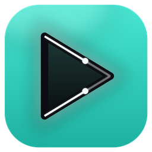

Play any video on your Mac.
Smoothly.
Every format opens in a blink. Subtitles find themselves. Free, with no ads.
The world makes incredible movies.
Most aren't in your language.
Press ⌘F, pick your language, and the story is yours. No subtitle sites.
Made to feel effortless.
Smooth from the first click.
Opens in a blink. Preview any moment. Controls that fade away.
Subtitles that find themselves.
Messy file name? Dofi fixes it and puts the best match first.
Every screen. One movie.
Stretch it across all your monitors, mirror it, or black out the rest.
Paste a link. Watch it like a movie.
YouTube plays right in Dofi. Save a clip in one click.
Our test: MacBook Pro M3 Pro, 4K HEVC file, September 2026.
How Dofi compares.
| Dofi | IINA | VLC | QuickTime | |
|---|---|---|---|---|
| Free | ✓ | ✓ | ✓ | ✓ |
| Plays MKV and almost anything | ✓ | ✓ | ✓ | ✕ |
| Finds subtitles online | ✓ | ✓ | add-on | ✕ |
| Fixes typos before searching | ✓ | – | – | ✕ |
| One movie across all monitors | ✓ | – | – | ✕ |
| Black out other screens | ✓ | – | – | ✕ |
| Plays YouTube links | ✓ | ✓ | partly | ✕ |
| Saves a clip from a link | ✓ | – | – | ✕ |
| Runs on Intel Macs | ✕ | ✓ | ✓ | ✓ |
| Runs on Windows and Linux | ✕ | ✕ | ✓ | ✕ |
– not a one-click built-in, as far as each app's own site shows. Checked October 2026.
Ready in a minute.
- Downloadand drag Dofi to Applications.
- Open itmacOS asks once. Click Done.
- Open Anywayin System Settings → Privacy & Security.
Why? Dofi is free and indie, so it skips Apple's $99/year notarization. Updates never ask again.
Questions.
Is it really free?
Yes. No ads, no account, no trial.
Will it run on my Mac?
Yes, if it has an M1 chip or newer and macOS 14 or later. Intel Macs aren't supported yet.
Is it safe?
No tracking. Dofi only goes online for updates, subtitles you ask for, and links you paste.
Why does macOS ask me to confirm it?
Dofi is free and indie, so it skips Apple's $99/year notarization. You click Open Anyway once. Updates never ask again.
Which subtitle languages can I get?
Any language available on OpenSubtitles and Podnapisi. Pick it in the ⌘F search.
Can I use my own subtitle files?
Yes. Drop an SRT, ASS or VTT file onto the window.
How do updates work?
Dofi checks once a day. When a new version is out, one click installs it.
Can I keep VLC or IINA?
Of course. To make Dofi your default: right-click a video, Get Info, Open with Dofi Player, Change All.